Latest Update: March 18, 2026
We Reviewed the Top 20 Brands to Find the Best Blood Pressure Monitor in 2026
Discover the Top-Ranked Blood Pressure Monitors for 2025
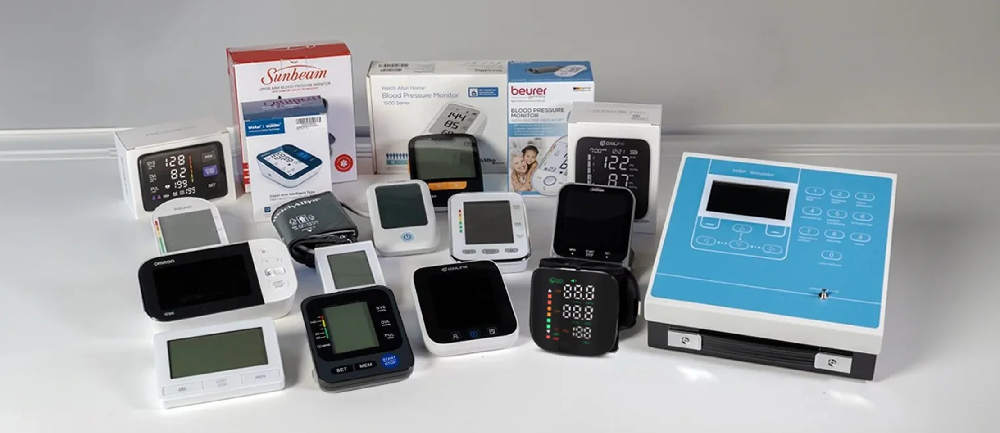
Whether you’re working with a doctor to monitor and lower your blood pressure or want to know your numbers, blood pressure monitors (or sphygmomanometers) can provide a convenient way to keep track of your readings at home. Some monitors also offer feedback on abnormal readings or guidance on taking an accurate reading right on the screen.
To find the best blood pressure monitors for heart-related conditions like hypertension, we tested more than 20 models in the Health Lab under the guidance of William Larsen, MD, a board-certified physician and New York-based cardiologist from our Medical Expert Board for setup, fit, accuracy, ease of use, data display, and portability. Out of the 20 we've tested, we narrowed it down to the best 5. In addition, a cardiologist specialist from our Medical Expert Board carefully reviewed the entire article, assessing the credibility of blood pressure monitor selection criteria, the reliability of their readings, and the correct interpretation of results.
How do blood pressure monitors work?
Blood pressure monitors work by wrapping a cuff around the arm, which inflates to constrict blood flow.
The device measures vibrations or changes in arterial pressure as the cuff deflates, displaying systolic and diastolic pressures.
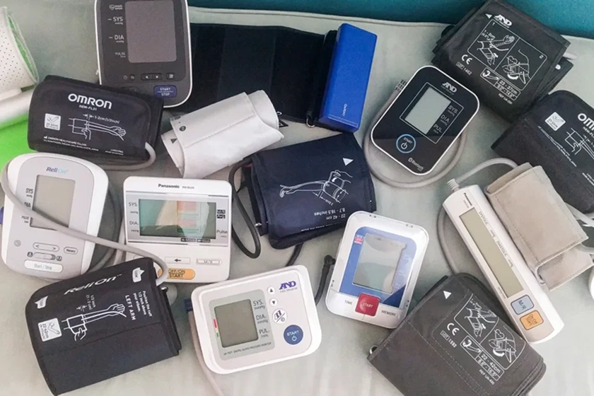
What To Look For In A Blood Pressure Monitor
Ensure the monitor is clinically validated for accuracy. Look for devices approved by medical authorities or those that have undergone rigorous testing.
Choose a monitor with a clear display, simple controls, and easy-to-understand instructions. Features like one-touch operation and large buttons can make it more user-friendly.
The cuff size should match your arm circumference for accurate readings. Some monitors offer adjustable or multiple cuff sizes to accommodate different users.
If you are not happy with your product, it should be easy to return your monitor. Avoid companies that make it very difficult to return a product or get a refund.
What To Avoid
Steer clear of monitors that haven't been clinically validated for accuracy and reliability.
Avoid devices with complex setups and hard-to-read displays that can lead to user errors in measurement.
Beware of low-cost models that may compromise on quality and accuracy, potentially leading to misleading health assessments.
The Top 5 Blood Pressure Monitors in 2026
NovaCardix

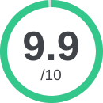
Overall rating
a+
OVERALL GRADE
Pros
- Most accurate readings (+/- 1mm Hg) in 1 minute.
- Adjustable and comfortable cuff.
- 30 day, risk free, money back guarantee.
- Recommended by doctors.
- Multi-user readings available.
- Large LED display for easier readings.
- One-button operation for ease of use.
- Over 400,000+ customers.
Cons
- Due to high demand, it may sometimes be sold out.
- Can only be found online.
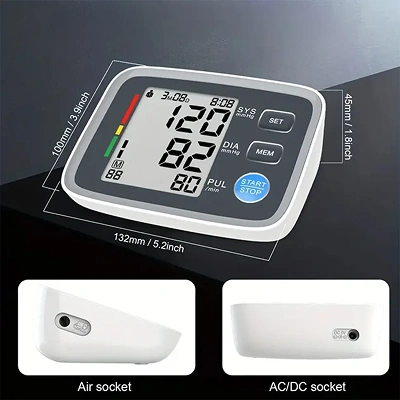
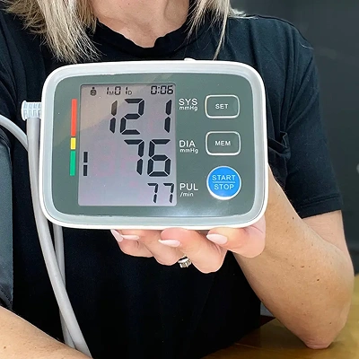
Conclusion
The easy way to track your heart health at home - trusted by thousands worldwide.
Highly Accurate: Advanced oscillometric technology ensures precise, consistent readings.
One-Button Operation: Just press START and get results in 60 seconds - no complicated setup or smartphone needed.
Smart Memory Tracking: Stores 180 readings (90 per user) to help you and your doctor monitor your progress.
Instant BP Classification: WHO-approved color scale shows immediately if you're normal (green), elevated (yellow), or high (red).
BP MeterX™

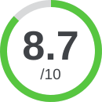
Overall rating
b
OVERALL GRADE
Pros
- Good measurement accuracy.
- Average processing time.
- Modern design.
Cons
- Display too dark.
- Overpriced.
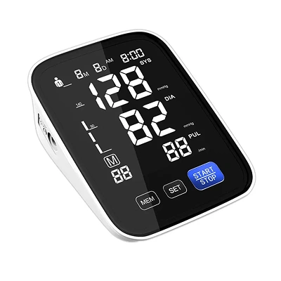
Conclusion
Reliable Results at Your Fingertips – Instant, Clear, Easy-to-Read
Precision You Can Trust: advanced sensor provides consistent blood pressure readings you can depend on at home.
Dual-User Tracking: stores 90 readings each for two users—perfect for couples or families monitoring health together.
Large, Easy-Read Display: oversized LCD with intuitive WHO risk-level indicators makes results instantly clear, day or night.
Comfortable Universal Cuff: soft, adjustable cuff comfortably fits adult arms from 22–42 cm for stress-free measurements.
Sunbeam TMB-1583-S
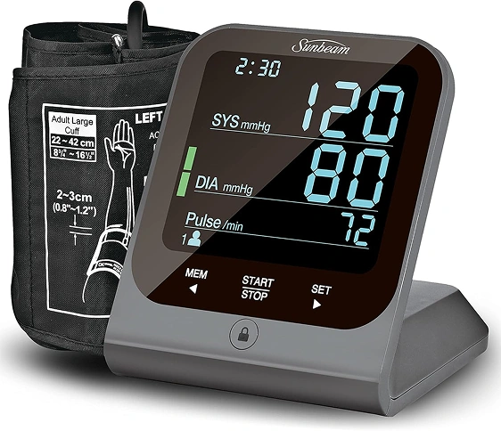
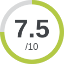
Overall rating
c
OVERALL GRADE
Pros
- Sold on popular marketplaces.
- AC adapter included.
- Budget-friendly.
- 3-year limited warranty.
- Reputable brand.
Cons
- Current model is phased out.
- Audio alerts could be louder.
- Screen is not optimal.
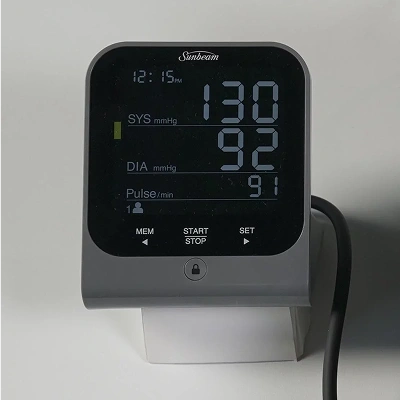
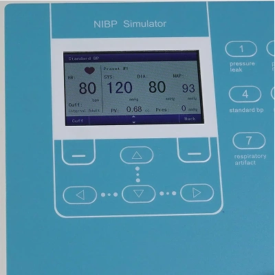
Conclusion
The Sunbeam TMB-1583-S is a device with a unique stand and vertical display. For that reason, we placed a small box under it after each reading so that the display could face the camera. During our test, it averaged a reading deviation of +/- 7 mm Hg. One of the readings showed a substantial deviation of 10 mm Hg.
The TMB-1583-S features 3 reading average and a large touchscreen display which proved troublesome to use since the surface was at times not responsive. It includes an AC adapter and 3-year limited warranty. This device does not have Bluetooth connectivity for smartphone apps.
OMRON Series 10
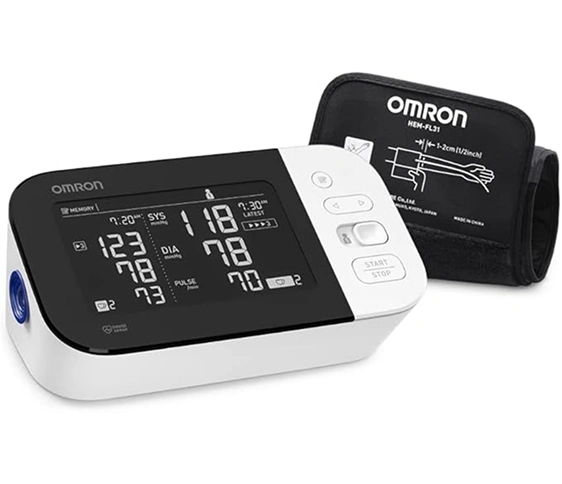
Overall rating
c+
OVERALL GRADE
Pros
- App compatible with both Android and Apple.
- Suitable for smaller arms.
- Large screen display.
- Made by reputable company.
Cons
- Inaccurate Readings +/- 9mm Hg.
- Cuff not meant for larger arms.
- Bad value for cost.
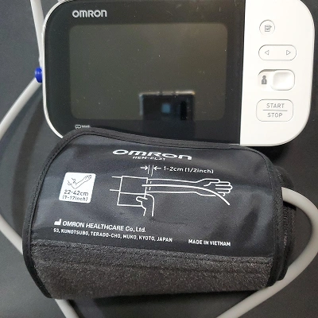
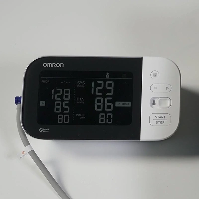
Conclusion
The Omron Series 10 is a popular blood pressure monitor and the largest device that we tested. With a deviation average of +/- 9 mm Hg the results were completely inaccurate in both systolic and diastolic pressure.
The Omron Series 10 has a unique cuff system that is ideal for users with arms smaller than 14” in circumference but can prove difficult or unusable for users with larger arms. (Omron offers an XL cuff at an additional cost) It features a smartphone app that is user-friendly and has great functionality for both Apple and Android devices.
For anyone who prefers using an app for readings and has smaller arms, this device is for you.
Smartheart Automatic Wrist Monitor
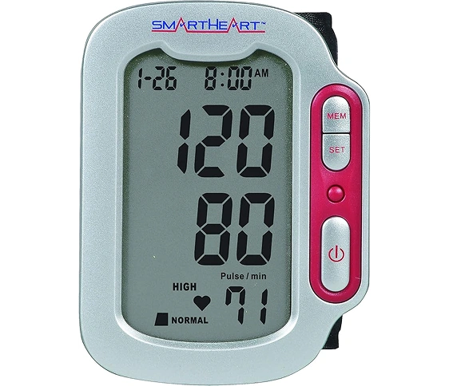
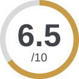
Overall rating
d
OVERALL GRADE
Pros
- Convenient one-button operation.
- Clinically accurate reading.
- Latex-free.
Cons
- Does not allow multi-users.
- Only for wrists.
- Limited guarantees.
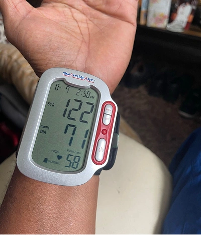
Conclusion
Landing the final position on our list, Smartheart's Automatic Wrist Monitor is by no means the least in terms of quality. Among the over 20 devices we evaluated, our standards were rigorous.
The Smartheart Automatic Wrist BP Monitor is the perfect choice for you if you want a quick, efficient way to check your blood pressure without the use of a full cuff. It can fit an adult wrist size of 5" to 8.25".
This blood pressure monitor takes your reading during cuff inflation, resulting in faster measurement time and less time with your wrist compressed under the pressure of the cuff.
William Larsen, Cardiologist
With a deep background in cardiology, William Larsen distinguishes himself as a prominent author and expert in the field. His knowledge is showcased in our comprehensive review article on the Top 5 Blood Pressure Monitors.